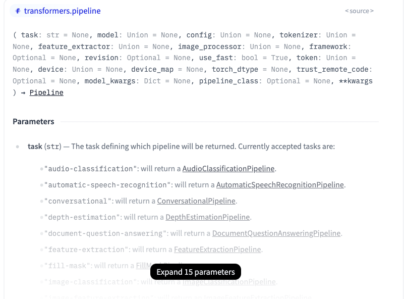
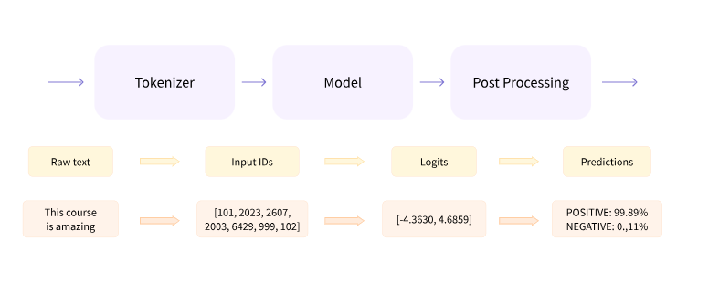
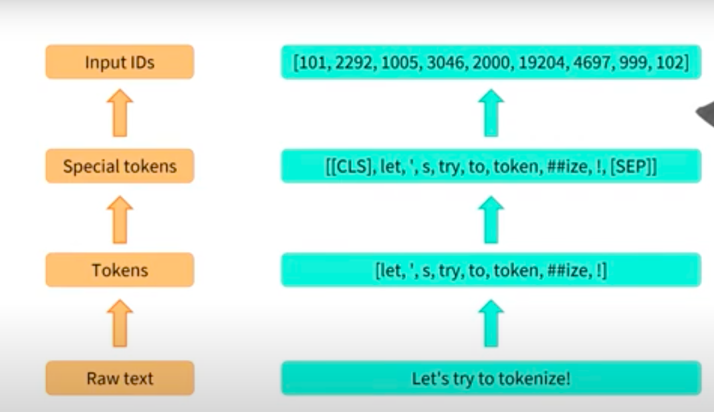

from transformers import pipelineIn this module we will explore basics of Hugging Face for Sentiment Classification. Subtopics that we will explore in this blog.
- Simple Pipeline of HuggingFace for Sentiment Classification.
- Diving the pieces of Pipeline ( Tokenizing, Predicting, Reporting }
- What happens inside Tokenizer
- How Finetuning works
- How Finetuning works with Custom Layers on Top of the Hugging Face Model.
Primarly this is prepeared for my ready reference for future. Hope this helps others too.

1. Hugging Face Pipeline
The pipelines are a great and easy way to use models for inference. These pipelines are objects that abstract most of the complex code from the library, offering a simple API dedicated to several tasks, including Named Entity Recognition, Masked Language Modeling, Sentiment Analysis, Feature Extraction and Question Answering. Pipeline Reference.
Here we need to import pipeline from transformers package. This function primarly has two important inputs.
- What Task we need to perform.
- What model we need to use to perform the task.
As shown in the below image we can choose the task that we need to use at hand.

We can select any relevant model from this link.
To start with I choose: 1. Task as Sentiment Analysis 2. Model as Distilbert-base
task = "sentiment-analysis"
checkpoint = "distilbert/distilbert-base-uncased-finetuned-sst-2-english"
sentiment_classifer = pipeline(task,model = checkpoint,framework="tf")/usr/local/lib/python3.10/dist-packages/huggingface_hub/utils/_token.py:89: UserWarning:
The secret `HF_TOKEN` does not exist in your Colab secrets.
To authenticate with the Hugging Face Hub, create a token in your settings tab (https://huggingface.co/settings/tokens), set it as secret in your Google Colab and restart your session.
You will be able to reuse this secret in all of your notebooks.
Please note that authentication is recommended but still optional to access public models or datasets.
warnings.warn(
All PyTorch model weights were used when initializing TFDistilBertForSequenceClassification.
All the weights of TFDistilBertForSequenceClassification were initialized from the PyTorch model.
If your task is similar to the task the model of the checkpoint was trained on, you can already use TFDistilBertForSequenceClassification for predictions without further training.If we can observe all the related base files are loaded; that includes model configuration, model itself and vocab text
Now predicting is simple like we use chatgpt
sentiment_classifer("This is a cool blog!!!")[{'label': 'POSITIVE', 'score': 0.9998422861099243}]sentiment_classifer("Games are boring!!!")[{'label': 'NEGATIVE', 'score': 0.9996864795684814}]We can even pass the inputs in a list
raw_inputs = [
"I've been waiting for a HuggingFace course my whole life.",
"I hate this so much!",
"My niece absolutely loves this. It’s a great way to get her outside but keep her distracted so she’s not running around the yard. It was very easy to assemble and super durable. Also super easy to clean."
]sentiment_classifer(raw_inputs)[{'label': 'POSITIVE', 'score': 0.9598046541213989},
{'label': 'NEGATIVE', 'score': 0.9994558691978455},
{'label': 'POSITIVE', 'score': 0.9994500279426575}]We can see how simple the pipeline module works. All we need to identify our task and model and create a pipeline.
After creating a pipeline we need to pass our input data and wait for its prediction. The beauty of this prediction is that it provides the final labels too.
2. Inside Pipeline
Inside Pipeline we have three steps:
- Tokenizing
- Model
- Post Processing
Tokenizing means - Tokenizing the sentence into numerical values. Model - Uses these token ids and predicts the logits Post Processing - We will use obtained logits to arrive at our required labels.
For reference see the below image.

2.1 AutoTokenizer
AutoTokenizer is a generic tokenizer that can be used for wide range of models offers by hugging face.
We need to create a tokenizer object
from transformers import AutoTokenizer
tokenizer = AutoTokenizer.from_pretrained(checkpoint)
type(tokenizer)transformers.models.distilbert.tokenization_distilbert_fast.DistilBertTokenizerFast
def __call__(text: Union[TextInput, PreTokenizedInput, List[TextInput], List[PreTokenizedInput]]=None, text_pair: Optional[Union[TextInput, PreTokenizedInput, List[TextInput], List[PreTokenizedInput]]]=None, text_target: Union[TextInput, PreTokenizedInput, List[TextInput], List[PreTokenizedInput]]=None, text_pair_target: Optional[Union[TextInput, PreTokenizedInput, List[TextInput], List[PreTokenizedInput]]]=None, add_special_tokens: bool=True, padding: Union[bool, str, PaddingStrategy]=False, truncation: Union[bool, str, TruncationStrategy]=None, max_length: Optional[int]=None, stride: int=0, is_split_into_words: bool=False, pad_to_multiple_of: Optional[int]=None, return_tensors: Optional[Union[str, TensorType]]=None, return_token_type_ids: Optional[bool]=None, return_attention_mask: Optional[bool]=None, return_overflowing_tokens: bool=False, return_special_tokens_mask: bool=False, return_offsets_mapping: bool=False, return_length: bool=False, verbose: bool=True, **kwargs) -> BatchEncoding
Construct a "fast" DistilBERT tokenizer (backed by HuggingFace's *tokenizers* library). Based on WordPiece. This tokenizer inherits from [`PreTrainedTokenizerFast`] which contains most of the main methods. Users should refer to this superclass for more information regarding those methods. Args: vocab_file (`str`): File containing the vocabulary. do_lower_case (`bool`, *optional*, defaults to `True`): Whether or not to lowercase the input when tokenizing. unk_token (`str`, *optional*, defaults to `"[UNK]"`): The unknown token. A token that is not in the vocabulary cannot be converted to an ID and is set to be this token instead. sep_token (`str`, *optional*, defaults to `"[SEP]"`): The separator token, which is used when building a sequence from multiple sequences, e.g. two sequences for sequence classification or for a text and a question for question answering. It is also used as the last token of a sequence built with special tokens. pad_token (`str`, *optional*, defaults to `"[PAD]"`): The token used for padding, for example when batching sequences of different lengths. cls_token (`str`, *optional*, defaults to `"[CLS]"`): The classifier token which is used when doing sequence classification (classification of the whole sequence instead of per-token classification). It is the first token of the sequence when built with special tokens. mask_token (`str`, *optional*, defaults to `"[MASK]"`): The token used for masking values. This is the token used when training this model with masked language modeling. This is the token which the model will try to predict. clean_text (`bool`, *optional*, defaults to `True`): Whether or not to clean the text before tokenization by removing any control characters and replacing all whitespaces by the classic one. tokenize_chinese_chars (`bool`, *optional*, defaults to `True`): Whether or not to tokenize Chinese characters. This should likely be deactivated for Japanese (see [this issue](https://github.com/huggingface/transformers/issues/328)). strip_accents (`bool`, *optional*): Whether or not to strip all accents. If this option is not specified, then it will be determined by the value for `lowercase` (as in the original BERT). wordpieces_prefix (`str`, *optional*, defaults to `"##"`): The prefix for subwords.
Based on the model it automatically loads the required type of tokenizer. Since we used our checkpoint as distilbert we got the same tokenizer.
Lets check the same with another model for demonstration sake.
type(AutoTokenizer.from_pretrained("cardiffnlp/twitter-roberta-base-sentiment-latest"))/usr/local/lib/python3.10/dist-packages/huggingface_hub/file_download.py:1132: FutureWarning: `resume_download` is deprecated and will be removed in version 1.0.0. Downloads always resume when possible. If you want to force a new download, use `force_download=True`.
warnings.warn(transformers.models.roberta.tokenization_roberta_fast.RobertaTokenizerFast
def __call__(text: Union[TextInput, PreTokenizedInput, List[TextInput], List[PreTokenizedInput]]=None, text_pair: Optional[Union[TextInput, PreTokenizedInput, List[TextInput], List[PreTokenizedInput]]]=None, text_target: Union[TextInput, PreTokenizedInput, List[TextInput], List[PreTokenizedInput]]=None, text_pair_target: Optional[Union[TextInput, PreTokenizedInput, List[TextInput], List[PreTokenizedInput]]]=None, add_special_tokens: bool=True, padding: Union[bool, str, PaddingStrategy]=False, truncation: Union[bool, str, TruncationStrategy]=None, max_length: Optional[int]=None, stride: int=0, is_split_into_words: bool=False, pad_to_multiple_of: Optional[int]=None, return_tensors: Optional[Union[str, TensorType]]=None, return_token_type_ids: Optional[bool]=None, return_attention_mask: Optional[bool]=None, return_overflowing_tokens: bool=False, return_special_tokens_mask: bool=False, return_offsets_mapping: bool=False, return_length: bool=False, verbose: bool=True, **kwargs) -> BatchEncoding
Construct a "fast" RoBERTa tokenizer (backed by HuggingFace's *tokenizers* library), derived from the GPT-2 tokenizer, using byte-level Byte-Pair-Encoding. This tokenizer has been trained to treat spaces like parts of the tokens (a bit like sentencepiece) so a word will be encoded differently whether it is at the beginning of the sentence (without space) or not: ```python >>> from transformers import RobertaTokenizerFast >>> tokenizer = RobertaTokenizerFast.from_pretrained("FacebookAI/roberta-base") >>> tokenizer("Hello world")["input_ids"] [0, 31414, 232, 2] >>> tokenizer(" Hello world")["input_ids"] [0, 20920, 232, 2] ``` You can get around that behavior by passing `add_prefix_space=True` when instantiating this tokenizer or when you call it on some text, but since the model was not pretrained this way, it might yield a decrease in performance. <Tip> When used with `is_split_into_words=True`, this tokenizer needs to be instantiated with `add_prefix_space=True`. </Tip> This tokenizer inherits from [`PreTrainedTokenizerFast`] which contains most of the main methods. Users should refer to this superclass for more information regarding those methods. Args: vocab_file (`str`): Path to the vocabulary file. merges_file (`str`): Path to the merges file. errors (`str`, *optional*, defaults to `"replace"`): Paradigm to follow when decoding bytes to UTF-8. See [bytes.decode](https://docs.python.org/3/library/stdtypes.html#bytes.decode) for more information. bos_token (`str`, *optional*, defaults to `"<s>"`): The beginning of sequence token that was used during pretraining. Can be used a sequence classifier token. <Tip> When building a sequence using special tokens, this is not the token that is used for the beginning of sequence. The token used is the `cls_token`. </Tip> eos_token (`str`, *optional*, defaults to `"</s>"`): The end of sequence token. <Tip> When building a sequence using special tokens, this is not the token that is used for the end of sequence. The token used is the `sep_token`. </Tip> sep_token (`str`, *optional*, defaults to `"</s>"`): The separator token, which is used when building a sequence from multiple sequences, e.g. two sequences for sequence classification or for a text and a question for question answering. It is also used as the last token of a sequence built with special tokens. cls_token (`str`, *optional*, defaults to `"<s>"`): The classifier token which is used when doing sequence classification (classification of the whole sequence instead of per-token classification). It is the first token of the sequence when built with special tokens. unk_token (`str`, *optional*, defaults to `"<unk>"`): The unknown token. A token that is not in the vocabulary cannot be converted to an ID and is set to be this token instead. pad_token (`str`, *optional*, defaults to `"<pad>"`): The token used for padding, for example when batching sequences of different lengths. mask_token (`str`, *optional*, defaults to `"<mask>"`): The token used for masking values. This is the token used when training this model with masked language modeling. This is the token which the model will try to predict. add_prefix_space (`bool`, *optional*, defaults to `False`): Whether or not to add an initial space to the input. This allows to treat the leading word just as any other word. (RoBERTa tokenizer detect beginning of words by the preceding space). trim_offsets (`bool`, *optional*, defaults to `True`): Whether the post processing step should trim offsets to avoid including whitespaces.
Since, we have used Roberta model. Autotokenizer automatically loads Roberta Tokenizer. The beauty of Autotokenizer wrapper is that it became model agnostic.
All we need is a simple command to convert words into token ids. Here we have added padding to create padding to ensure same structure of all sentence lengths. Truncation is then introducted to maintain the max token length of the model.
tokenizer(raw_inputs,padding=True,truncation=True,return_tensors="tf"){'input_ids': <tf.Tensor: shape=(3, 48), dtype=int32, numpy=
array([[ 101, 1045, 1005, 2310, 2042, 3403, 2005, 1037, 17662,
12172, 2607, 2026, 2878, 2166, 1012, 102, 0, 0,
0, 0, 0, 0, 0, 0, 0, 0, 0,
0, 0, 0, 0, 0, 0, 0, 0, 0,
0, 0, 0, 0, 0, 0, 0, 0, 0,
0, 0, 0],
[ 101, 1045, 5223, 2023, 2061, 2172, 999, 102, 0,
0, 0, 0, 0, 0, 0, 0, 0, 0,
0, 0, 0, 0, 0, 0, 0, 0, 0,
0, 0, 0, 0, 0, 0, 0, 0, 0,
0, 0, 0, 0, 0, 0, 0, 0, 0,
0, 0, 0],
[ 101, 2026, 12286, 7078, 7459, 2023, 1012, 2009, 1521,
1055, 1037, 2307, 2126, 2000, 2131, 2014, 2648, 2021,
2562, 2014, 11116, 2061, 2016, 1521, 1055, 2025, 2770,
2105, 1996, 4220, 1012, 2009, 2001, 2200, 3733, 2000,
21365, 1998, 3565, 25634, 1012, 2036, 3565, 3733, 2000,
4550, 1012, 102]], dtype=int32)>, 'attention_mask': <tf.Tensor: shape=(3, 48), dtype=int32, numpy=
array([[1, 1, 1, 1, 1, 1, 1, 1, 1, 1, 1, 1, 1, 1, 1, 1, 0, 0, 0, 0, 0, 0,
0, 0, 0, 0, 0, 0, 0, 0, 0, 0, 0, 0, 0, 0, 0, 0, 0, 0, 0, 0, 0, 0,
0, 0, 0, 0],
[1, 1, 1, 1, 1, 1, 1, 1, 0, 0, 0, 0, 0, 0, 0, 0, 0, 0, 0, 0, 0, 0,
0, 0, 0, 0, 0, 0, 0, 0, 0, 0, 0, 0, 0, 0, 0, 0, 0, 0, 0, 0, 0, 0,
0, 0, 0, 0],
[1, 1, 1, 1, 1, 1, 1, 1, 1, 1, 1, 1, 1, 1, 1, 1, 1, 1, 1, 1, 1, 1,
1, 1, 1, 1, 1, 1, 1, 1, 1, 1, 1, 1, 1, 1, 1, 1, 1, 1, 1, 1, 1, 1,
1, 1, 1, 1]], dtype=int32)>}Output generates input_ids these are numerical values that are specific to vocabulary. attention_mask to tell the model which are padded numbers and which aren’t. Now, we are all ready to use this generated tokenids for our modelling.
tokenized_ids = tokenizer(raw_inputs,padding=True,truncation=True,return_tensors="tf")2.2. Sequence Classification Model
Similar to AutoTokenizer for modelling we have AutoModel and since our task is Sequence Classification we will directly use AutoModelForSequenceClassification.
Now we will create a model object
from transformers import TFAutoModelForSequenceClassification
bert_model = TFAutoModelForSequenceClassification.from_pretrained(checkpoint)
type(bert_model)All PyTorch model weights were used when initializing TFDistilBertForSequenceClassification.
All the weights of TFDistilBertForSequenceClassification were initialized from the PyTorch model.
If your task is similar to the task the model of the checkpoint was trained on, you can already use TFDistilBertForSequenceClassification for predictions without further training.transformers.models.distilbert.modeling_tf_distilbert.TFDistilBertForSequenceClassification
def error_handler(*args, **kwargs)
DistilBert Model transformer with a sequence classification/regression head on top (a linear layer on top of the pooled output) e.g. for GLUE tasks. This model inherits from [`TFPreTrainedModel`]. Check the superclass documentation for the generic methods the library implements for all its model (such as downloading or saving, resizing the input embeddings, pruning heads etc.) This model is also a [keras.Model](https://www.tensorflow.org/api_docs/python/tf/keras/Model) subclass. Use it as a regular TF 2.0 Keras Model and refer to the TF 2.0 documentation for all matter related to general usage and behavior. <Tip> TensorFlow models and layers in `transformers` accept two formats as input: - having all inputs as keyword arguments (like PyTorch models), or - having all inputs as a list, tuple or dict in the first positional argument. The reason the second format is supported is that Keras methods prefer this format when passing inputs to models and layers. Because of this support, when using methods like `model.fit()` things should "just work" for you - just pass your inputs and labels in any format that `model.fit()` supports! If, however, you want to use the second format outside of Keras methods like `fit()` and `predict()`, such as when creating your own layers or models with the Keras `Functional` API, there are three possibilities you can use to gather all the input Tensors in the first positional argument: - a single Tensor with `input_ids` only and nothing else: `model(input_ids)` - a list of varying length with one or several input Tensors IN THE ORDER given in the docstring: `model([input_ids, attention_mask])` or `model([input_ids, attention_mask, token_type_ids])` - a dictionary with one or several input Tensors associated to the input names given in the docstring: `model({"input_ids": input_ids, "token_type_ids": token_type_ids})` Note that when creating models and layers with [subclassing](https://keras.io/guides/making_new_layers_and_models_via_subclassing/) then you don't need to worry about any of this, as you can just pass inputs like you would to any other Python function! </Tip> Parameters: config ([`DistilBertConfig`]): Model configuration class with all the parameters of the model. Initializing with a config file does not load the weights associated with the model, only the configuration. Check out the [`~PreTrainedModel.from_pretrained`] method to load the model weights.
Based on the model it automatically loads the required type of TFModel. Since we used our checkpoint as distilbert we got the same model.
Here TF stands for TensorFlow since we will using TensorFlow Framework isntead of pytorch.
We can see the model configuration by using the keywork .config. This model is trained on 30K vocab size.
bert_model.configDistilBertConfig {
"_name_or_path": "distilbert/distilbert-base-uncased-finetuned-sst-2-english",
"activation": "gelu",
"architectures": [
"DistilBertForSequenceClassification"
],
"attention_dropout": 0.1,
"dim": 768,
"dropout": 0.1,
"finetuning_task": "sst-2",
"hidden_dim": 3072,
"id2label": {
"0": "NEGATIVE",
"1": "POSITIVE"
},
"initializer_range": 0.02,
"label2id": {
"NEGATIVE": 0,
"POSITIVE": 1
},
"max_position_embeddings": 512,
"model_type": "distilbert",
"n_heads": 12,
"n_layers": 6,
"output_past": true,
"pad_token_id": 0,
"qa_dropout": 0.1,
"seq_classif_dropout": 0.2,
"sinusoidal_pos_embds": false,
"tie_weights_": true,
"transformers_version": "4.41.0",
"vocab_size": 30522
}We can explore the model architecture by simply viewing the summary as well. Which has a core distilbert model followed by a pre-classifier and then a classifer layer for predicting the output.
bert_model.summary()Model: "tf_distil_bert_for_sequence_classification_1"
_________________________________________________________________
Layer (type) Output Shape Param #
=================================================================
distilbert (TFDistilBertMa multiple 66362880
inLayer)
pre_classifier (Dense) multiple 590592
classifier (Dense) multiple 1538
dropout_39 (Dropout) multiple 0 (unused)
=================================================================
Total params: 66955010 (255.41 MB)
Trainable params: 66955010 (255.41 MB)
Non-trainable params: 0 (0.00 Byte)
_________________________________________________________________We can view the architecture of individual layers in the following way.
for layer in bert_model.layers:
print(layer.name)
print(layer.get_config())distilbert
{'name': 'distilbert', 'trainable': True, 'dtype': 'float32', 'config': {'vocab_size': 30522, 'max_position_embeddings': 512, 'sinusoidal_pos_embds': False, 'n_layers': 6, 'n_heads': 12, 'dim': 768, 'hidden_dim': 3072, 'dropout': 0.1, 'attention_dropout': 0.1, 'activation': 'gelu', 'initializer_range': 0.02, 'qa_dropout': 0.1, 'seq_classif_dropout': 0.2, 'return_dict': True, 'output_hidden_states': False, 'output_attentions': False, 'torchscript': False, 'torch_dtype': None, 'use_bfloat16': False, 'tf_legacy_loss': False, 'pruned_heads': {}, 'tie_word_embeddings': True, 'chunk_size_feed_forward': 0, 'is_encoder_decoder': False, 'is_decoder': False, 'cross_attention_hidden_size': None, 'add_cross_attention': False, 'tie_encoder_decoder': False, 'max_length': 20, 'min_length': 0, 'do_sample': False, 'early_stopping': False, 'num_beams': 1, 'num_beam_groups': 1, 'diversity_penalty': 0.0, 'temperature': 1.0, 'top_k': 50, 'top_p': 1.0, 'typical_p': 1.0, 'repetition_penalty': 1.0, 'length_penalty': 1.0, 'no_repeat_ngram_size': 0, 'encoder_no_repeat_ngram_size': 0, 'bad_words_ids': None, 'num_return_sequences': 1, 'output_scores': False, 'return_dict_in_generate': False, 'forced_bos_token_id': None, 'forced_eos_token_id': None, 'remove_invalid_values': False, 'exponential_decay_length_penalty': None, 'suppress_tokens': None, 'begin_suppress_tokens': None, 'architectures': ['DistilBertForSequenceClassification'], 'finetuning_task': 'sst-2', 'id2label': {0: 'NEGATIVE', 1: 'POSITIVE'}, 'label2id': {'NEGATIVE': 0, 'POSITIVE': 1}, 'tokenizer_class': None, 'prefix': None, 'bos_token_id': None, 'pad_token_id': 0, 'eos_token_id': None, 'sep_token_id': None, 'decoder_start_token_id': None, 'task_specific_params': None, 'problem_type': None, '_name_or_path': 'distilbert/distilbert-base-uncased-finetuned-sst-2-english', 'transformers_version': '4.41.0', 'model_type': 'distilbert', 'output_past': True, 'tie_weights_': True}}
pre_classifier
{'name': 'pre_classifier', 'trainable': True, 'dtype': 'float32', 'units': 768, 'activation': 'relu', 'use_bias': True, 'kernel_initializer': {'module': 'keras.initializers', 'class_name': 'TruncatedNormal', 'config': {'mean': 0.0, 'stddev': 0.02, 'seed': None}, 'registered_name': None}, 'bias_initializer': {'module': 'keras.initializers', 'class_name': 'Zeros', 'config': {}, 'registered_name': None}, 'kernel_regularizer': None, 'bias_regularizer': None, 'activity_regularizer': None, 'kernel_constraint': None, 'bias_constraint': None}
classifier
{'name': 'classifier', 'trainable': True, 'dtype': 'float32', 'units': 2, 'activation': 'linear', 'use_bias': True, 'kernel_initializer': {'module': 'keras.initializers', 'class_name': 'TruncatedNormal', 'config': {'mean': 0.0, 'stddev': 0.02, 'seed': None}, 'registered_name': None}, 'bias_initializer': {'module': 'keras.initializers', 'class_name': 'Zeros', 'config': {}, 'registered_name': None}, 'kernel_regularizer': None, 'bias_regularizer': None, 'activity_regularizer': None, 'kernel_constraint': None, 'bias_constraint': None}
dropout_39
{'name': 'dropout_39', 'trainable': True, 'dtype': 'float32', 'rate': 0.2, 'noise_shape': None, 'seed': None}Now let’s pass the tokenized_ids that we have saved in the previous section and pass to this model.
bert_model(tokenized_ids)TFSequenceClassifierOutput(loss=None, logits=<tf.Tensor: shape=(3, 2), dtype=float32, numpy=
array([[-1.560698 , 1.6122831],
[ 4.1692305, -3.3464472],
[-3.6664698, 3.8386683]], dtype=float32)>, hidden_states=None, attentions=None)What did we get here??
We got logits which are nothing but the raw scores of the final layer. These are not probabilities. All we need to do is to add a softmax layer to get the probabilities of each label. Which can done by using tf.math.softmax
2.3. Post Processing
logits = bert_model(tokenized_ids).logits
import tensorflow as tf
print(tf.math.softmax(logits).numpy())[[4.0195242e-02 9.5980471e-01]
[9.9945587e-01 5.4418476e-04]
[5.4994709e-04 9.9945003e-01]]Now we have extracted probabilities. Now, we can use argmax function to get the index of the maximum value of the probability.
tf.argmax(tf.math.softmax(logits),axis=1).numpy()array([1, 0, 1])1means positive0means
In this way we have explored three parts of the pipeline individually.
3. What’s happening inside Tokenizer
Below is we get when we use default tokenizer. Where we get the input_ids and attention_mask by default. Now, we will explore how this is formed.
tokenizer = AutoTokenizer.from_pretrained(checkpoint)
tokenizer("I hate this so much!"){'input_ids': [101, 1045, 5223, 2023, 2061, 2172, 999, 102], 'attention_mask': [1, 1, 1, 1, 1, 1, 1, 1]}3.1 Tokenization
Usually there are three types of tokenization.
- Word based tokenization
- Character level tokenization
Both of the above are two extreme states of tokenization. The usual approach that is followed in large models are sub-word tokenization
We can tokenize the words by using tokenizer.tokenize function
tokenizer.tokenize("I hate this so much!")['i', 'hate', 'this', 'so', 'much', '!']tokenizer.tokenize("This beautilization is so lucky!") #Random Sentence to demonstrate automatic subword tokenization['this', 'beau', '##ti', '##lization', 'is', 'so', 'lucky', '!']3.2. Tokenized Words to IDs
To convert these tokens to words we need to map using the vocabulary which is trained through this model.
Earlier using the config file we have explored that the vocabulary is of size 30K. Which can be further verified by using the len function and the we can see the first 10 vocabulary words along with ids.
print(len(tokenizer.vocab))
list(tokenizer.vocab.items())[:10]30522[('96', 5986),
('republished', 24476),
('worst', 5409),
('##bant', 29604),
('##ahu', 21463),
('fellow', 3507),
('explosives', 14792),
('infrared', 14611),
('##osaurus', 25767),
('tenant', 16713)]tokenizer.tokenize("I hate this so much!")['i', 'hate', 'this', 'so', 'much', '!']We can convert these into tokens by mapping the vocabulury key values
for i in tokenizer.tokenize("I hate this so much!"):
print(tokenizer.vocab[i])
print("")
tokenizer("I hate this so much!")["input_ids"]1045
5223
2023
2061
2172
999
[101, 1045, 5223, 2023, 2061, 2172, 999, 102]Now, we can see that the we are able to map the tokens. However, there are some special tokens at start and at end which are labelled as 101 and 102. Lets explore what are they
print(dict(tokenizer.vocab)["[CLS]"])
print(dict(tokenizer.vocab)["[SEP]"])101
102These are [CLS] indicating the starting of the sequence and [SEP] indicates a seperator here it is end of sentence as it is Sentiment Classification task. We can convert them directly to ids using convert_token_to_ids function
tokens = tokenizer.tokenize("I hate this so much!")
tokenizer.convert_tokens_to_ids(tokens)[1045, 5223, 2023, 2061, 2172, 999]
3.3. Preparing tokens for downstream modelling
We need to prepare these tokens for downstream modelling by using function prepare_for_model which creates both input_ids and attention_mask
token_to_ids = tokenizer.convert_tokens_to_ids(tokens)
tokenizer.prepare_for_model(token_to_ids)You're using a DistilBertTokenizerFast tokenizer. Please note that with a fast tokenizer, using the `__call__` method is faster than using a method to encode the text followed by a call to the `pad` method to get a padded encoding.{'input_ids': [101, 1045, 5223, 2023, 2061, 2172, 999, 102], 'attention_mask': [1, 1, 1, 1, 1, 1, 1, 1]}4. How Fine Tuning Works!
Let’s assume that we want to fine-tune the data to our dataset at hand.
Lets load the dataset of Amazon Review which we explored in our previous blog.
from google.colab import drive
import os
import pandas as pd
drive.mount('/content/drive')
os.chdir('/content/drive/My Drive/MSIS/IntroductiontoDeepLearning/Project/')
testdata = pd.read_csv('test_data_sample_complete.csv')
traindata = pd.read_csv('train_data_sample_complete.csv')Mounted at /content/drivePreparing the dataset and taking a sample of 1000 rows of both training and test dataset.
train_data = traindata.sample(n=1000, random_state=42)
test_data = testdata.sample(n=1000, random_state=42)
train_data['class_index'] = train_data['class_index'].map({1:0, 2:1})
test_data['class_index'] = test_data['class_index'].map({1:0, 2:1})
train_data['review_combined_lemma'] = train_data['review_combined_lemma'].fillna('')
test_data['review_combined_lemma'] = test_data['review_combined_lemma'].fillna('')train_data.head(3)| class_index | review_combined_lemma | |
|---|---|---|
| 2079998 | 0 | expensive junk product consists piece thin fle... |
| 1443106 | 0 | toast dark even lowest setting toast dark liki... |
| 3463669 | 1 | excellent imagerydumbed story enjoyed disc vid... |
4.1. Converting Pandas DataFrame to HuggingFace Dataset
For finetuning the hugging face model we need to convert the data frame into hugging face format which is pretty straight forward and easy
!pip install datasetsCollecting datasets
Downloading datasets-2.19.1-py3-none-any.whl (542 kB)
━━━━━━━━━━━━━━━━━━━━━━━━━━━━━━━━━━━━━━━━ 542.0/542.0 kB 7.3 MB/s eta 0:00:00
Requirement already satisfied: filelock in /usr/local/lib/python3.10/dist-packages (from datasets) (3.14.0)
Requirement already satisfied: numpy>=1.17 in /usr/local/lib/python3.10/dist-packages (from datasets) (1.25.2)
Requirement already satisfied: pyarrow>=12.0.0 in /usr/local/lib/python3.10/dist-packages (from datasets) (14.0.2)
Requirement already satisfied: pyarrow-hotfix in /usr/local/lib/python3.10/dist-packages (from datasets) (0.6)
Collecting dill<0.3.9,>=0.3.0 (from datasets)
Downloading dill-0.3.8-py3-none-any.whl (116 kB)
━━━━━━━━━━━━━━━━━━━━━━━━━━━━━━━━━━━━━━━━ 116.3/116.3 kB 10.1 MB/s eta 0:00:00
Requirement already satisfied: pandas in /usr/local/lib/python3.10/dist-packages (from datasets) (2.0.3)
Requirement already satisfied: requests>=2.19.0 in /usr/local/lib/python3.10/dist-packages (from datasets) (2.31.0)
Requirement already satisfied: tqdm>=4.62.1 in /usr/local/lib/python3.10/dist-packages (from datasets) (4.66.4)
Collecting xxhash (from datasets)
Downloading xxhash-3.4.1-cp310-cp310-manylinux_2_17_x86_64.manylinux2014_x86_64.whl (194 kB)
━━━━━━━━━━━━━━━━━━━━━━━━━━━━━━━━━━━━━━━━ 194.1/194.1 kB 9.6 MB/s eta 0:00:00
Collecting multiprocess (from datasets)
Downloading multiprocess-0.70.16-py310-none-any.whl (134 kB)
━━━━━━━━━━━━━━━━━━━━━━━━━━━━━━━━━━━━━━━━ 134.8/134.8 kB 14.0 MB/s eta 0:00:00
Requirement already satisfied: fsspec[http]<=2024.3.1,>=2023.1.0 in /usr/local/lib/python3.10/dist-packages (from datasets) (2023.6.0)
Requirement already satisfied: aiohttp in /usr/local/lib/python3.10/dist-packages (from datasets) (3.9.5)
Requirement already satisfied: huggingface-hub>=0.21.2 in /usr/local/lib/python3.10/dist-packages (from datasets) (0.23.1)
Requirement already satisfied: packaging in /usr/local/lib/python3.10/dist-packages (from datasets) (24.0)
Requirement already satisfied: pyyaml>=5.1 in /usr/local/lib/python3.10/dist-packages (from datasets) (6.0.1)
Requirement already satisfied: aiosignal>=1.1.2 in /usr/local/lib/python3.10/dist-packages (from aiohttp->datasets) (1.3.1)
Requirement already satisfied: attrs>=17.3.0 in /usr/local/lib/python3.10/dist-packages (from aiohttp->datasets) (23.2.0)
Requirement already satisfied: frozenlist>=1.1.1 in /usr/local/lib/python3.10/dist-packages (from aiohttp->datasets) (1.4.1)
Requirement already satisfied: multidict<7.0,>=4.5 in /usr/local/lib/python3.10/dist-packages (from aiohttp->datasets) (6.0.5)
Requirement already satisfied: yarl<2.0,>=1.0 in /usr/local/lib/python3.10/dist-packages (from aiohttp->datasets) (1.9.4)
Requirement already satisfied: async-timeout<5.0,>=4.0 in /usr/local/lib/python3.10/dist-packages (from aiohttp->datasets) (4.0.3)
Requirement already satisfied: typing-extensions>=3.7.4.3 in /usr/local/lib/python3.10/dist-packages (from huggingface-hub>=0.21.2->datasets) (4.11.0)
Requirement already satisfied: charset-normalizer<4,>=2 in /usr/local/lib/python3.10/dist-packages (from requests>=2.19.0->datasets) (3.3.2)
Requirement already satisfied: idna<4,>=2.5 in /usr/local/lib/python3.10/dist-packages (from requests>=2.19.0->datasets) (3.7)
Requirement already satisfied: urllib3<3,>=1.21.1 in /usr/local/lib/python3.10/dist-packages (from requests>=2.19.0->datasets) (2.0.7)
Requirement already satisfied: certifi>=2017.4.17 in /usr/local/lib/python3.10/dist-packages (from requests>=2.19.0->datasets) (2024.2.2)
Requirement already satisfied: python-dateutil>=2.8.2 in /usr/local/lib/python3.10/dist-packages (from pandas->datasets) (2.8.2)
Requirement already satisfied: pytz>=2020.1 in /usr/local/lib/python3.10/dist-packages (from pandas->datasets) (2023.4)
Requirement already satisfied: tzdata>=2022.1 in /usr/local/lib/python3.10/dist-packages (from pandas->datasets) (2024.1)
Requirement already satisfied: six>=1.5 in /usr/local/lib/python3.10/dist-packages (from python-dateutil>=2.8.2->pandas->datasets) (1.16.0)
Installing collected packages: xxhash, dill, multiprocess, datasets
Successfully installed datasets-2.19.1 dill-0.3.8 multiprocess-0.70.16 xxhash-3.4.1import datasets
from datasets import Dataset, DatasetDict
train_data = Dataset.from_pandas(train_data)
test_data = Dataset.from_pandas(test_data)
raw_data = DatasetDict()
raw_data["train"] = train_data
raw_data["test"] = test_data
print(raw_data)DatasetDict({
train: Dataset({
features: ['class_index', 'review_combined_lemma', '__index_level_0__'],
num_rows: 1000
})
test: Dataset({
features: ['class_index', 'review_combined_lemma', '__index_level_0__'],
num_rows: 1000
})
})To these datasets we need to tokenize the input data using our tokenizer which is done in the following way
def tokenize_function(example):
return tokenizer(example["review_combined_lemma"], truncation=True)
tokenized_datasets = raw_data.map(tokenize_function, batched=True)
print(tokenized_datasets)DatasetDict({
train: Dataset({
features: ['class_index', 'review_combined_lemma', '__index_level_0__', 'input_ids', 'attention_mask'],
num_rows: 1000
})
test: Dataset({
features: ['class_index', 'review_combined_lemma', '__index_level_0__', 'input_ids', 'attention_mask'],
num_rows: 1000
})
})Dataset.to_pandas(tokenized_datasets["train"]).head(3)| class_index | review_combined_lemma | __index_level_0__ | input_ids | attention_mask | |
|---|---|---|---|---|---|
| 0 | 0 | expensive junk product consists piece thin fle... | 2079998 | [101, 6450, 18015, 4031, 3774, 3538, 4857, 123... | [1, 1, 1, 1, 1, 1, 1, 1, 1, 1, 1, 1, 1, 1, 1, ... |
| 1 | 0 | toast dark even lowest setting toast dark liki... | 1443106 | [101, 15174, 2601, 2130, 7290, 4292, 15174, 26... | [1, 1, 1, 1, 1, 1, 1, 1, 1, 1, 1, 1, 1, 1, 1, ... |
| 2 | 1 | excellent imagerydumbed story enjoyed disc vid... | 3463669 | [101, 6581, 13425, 8566, 18552, 2094, 2466, 56... | [1, 1, 1, 1, 1, 1, 1, 1, 1, 1, 1, 1, 1, 1, 1, ... |
Finally, we have prepared the dataset in the required format and tokenized the input data.
Do note, we have not padding the input data. So, we lenghts of input_ids will be different based on the sentence length.
print(len(Dataset.to_pandas(tokenized_datasets["train"])["attention_mask"][0]))
print(len(Dataset.to_pandas(tokenized_datasets["train"])["attention_mask"][1]))
print(len(Dataset.to_pandas(tokenized_datasets["train"])["review_combined_lemma"][0]))
print(len(Dataset.to_pandas(tokenized_datasets["train"])["review_combined_lemma"][1]))81
27
422
132We need to use the DataCollatorWith Padding and finally convert this into individualized tensorflow datasets for faster processing.
from transformers import DataCollatorWithPadding
data_collator = DataCollatorWithPadding(tokenizer=tokenizer, return_tensors="tf")
tf_train_dataset = tokenized_datasets["train"].to_tf_dataset(
columns=["attention_mask", "input_ids"],
label_cols=["class_index"],
shuffle=True,
collate_fn=data_collator,
batch_size=8,
)
tf_validation_dataset = tokenized_datasets["test"].to_tf_dataset(
columns=["attention_mask", "input_ids"],
label_cols=["class_index"],
shuffle=False,
collate_fn=data_collator,
batch_size=8,
)/usr/local/lib/python3.10/dist-packages/datasets/arrow_dataset.py:410: FutureWarning: The output of `to_tf_dataset` will change when a passing single element list for `labels` or `columns` in the next datasets version. To return a tuple structure rather than dict, pass a single string.
Old behaviour: columns=['a'], labels=['labels'] -> (tf.Tensor, tf.Tensor)
: columns='a', labels='labels' -> (tf.Tensor, tf.Tensor)
New behaviour: columns=['a'],labels=['labels'] -> ({'a': tf.Tensor}, {'labels': tf.Tensor})
: columns='a', labels='labels' -> (tf.Tensor, tf.Tensor)
warnings.warn(4.2. Fine Tuning the Model
We have already loaded the bert_model in our previous steps which we will use for training.
bert_model.summary()Model: "tf_distil_bert_for_sequence_classification_1"
_________________________________________________________________
Layer (type) Output Shape Param #
=================================================================
distilbert (TFDistilBertMa multiple 66362880
inLayer)
pre_classifier (Dense) multiple 590592
classifier (Dense) multiple 1538
dropout_39 (Dropout) multiple 0
=================================================================
Total params: 66955010 (255.41 MB)
Trainable params: 66955010 (255.41 MB)
Non-trainable params: 0 (0.00 Byte)
_________________________________________________________________Once we have this model we need to change the loss to logits as the model output logits which needs to be further converted into probabilities.
compile and fit is simlar to that of regular tensorflow operations
bert_model.compile(
optimizer="adam",
loss=tf.keras.losses.SparseCategoricalCrossentropy(from_logits=True),
metrics=["accuracy"],
)
bert_model.fit(
tf_train_dataset,
validation_data=tf_validation_dataset,
verbose=1,
epochs=10
)Epoch 1/10
WARNING: AutoGraph could not transform <function infer_framework at 0x7fde78705750> and will run it as-is.
Cause: for/else statement not yet supported
To silence this warning, decorate the function with @tf.autograph.experimental.do_not_convert
125/125 [==============================] - 92s 297ms/step - loss: 0.7160 - accuracy: 0.5250 - val_loss: 0.6932 - val_accuracy: 0.5040
Epoch 2/10
125/125 [==============================] - 21s 167ms/step - loss: 0.7053 - accuracy: 0.4940 - val_loss: 0.6956 - val_accuracy: 0.5040
Epoch 3/10
125/125 [==============================] - 18s 144ms/step - loss: 1.0466 - accuracy: 0.4770 - val_loss: 0.6949 - val_accuracy: 0.4960
Epoch 4/10
125/125 [==============================] - 18s 148ms/step - loss: 0.6946 - accuracy: 0.5030 - val_loss: 0.6934 - val_accuracy: 0.4960
Epoch 5/10
125/125 [==============================] - 18s 147ms/step - loss: 0.6933 - accuracy: 0.4990 - val_loss: 0.6933 - val_accuracy: 0.4960
Epoch 6/10
125/125 [==============================] - 16s 129ms/step - loss: 0.6934 - accuracy: 0.4910 - val_loss: 0.6932 - val_accuracy: 0.4960
Epoch 7/10
125/125 [==============================] - 16s 127ms/step - loss: 0.6933 - accuracy: 0.4990 - val_loss: 0.6932 - val_accuracy: 0.4960
Epoch 8/10
125/125 [==============================] - 17s 138ms/step - loss: 0.6933 - accuracy: 0.4830 - val_loss: 0.6932 - val_accuracy: 0.4960
Epoch 9/10
125/125 [==============================] - 16s 132ms/step - loss: 0.6933 - accuracy: 0.4720 - val_loss: 0.6931 - val_accuracy: 0.4960
Epoch 10/10
125/125 [==============================] - 20s 162ms/step - loss: 0.6933 - accuracy: 0.4770 - val_loss: 0.6931 - val_accuracy: 0.5040WARNING:tensorflow:AutoGraph could not transform <function infer_framework at 0x7fde78705750> and will run it as-is.
Cause: for/else statement not yet supported
To silence this warning, decorate the function with @tf.autograph.experimental.do_not_convert<tf_keras.src.callbacks.History at 0x7fdd8571d810>Currently the accuracy is 50% because we have use small data and as well smaller epochs. It would definetly increase the accuracy if we can on full data which we will explore in next blog. However, this comes with a huge cost of training as fine-tuning the full model will take time as it needs to retain lot of paramters.
Since, majority of the paramters lie in distilbert layer; Let’s not train this layer. Which can be adjusted by making that layer trainable as False
bert_new_model = TFAutoModelForSequenceClassification.from_pretrained(checkpoint)
## Reloading the original model such that the original paramters are restored.
bert_new_model.layers[0].trainable = False
bert_new_model.summary()All PyTorch model weights were used when initializing TFDistilBertForSequenceClassification.
All the weights of TFDistilBertForSequenceClassification were initialized from the PyTorch model.
If your task is similar to the task the model of the checkpoint was trained on, you can already use TFDistilBertForSequenceClassification for predictions without further training.Model: "tf_distil_bert_for_sequence_classification_2"
_________________________________________________________________
Layer (type) Output Shape Param #
=================================================================
distilbert (TFDistilBertMa multiple 66362880
inLayer)
pre_classifier (Dense) multiple 590592
classifier (Dense) multiple 1538
dropout_59 (Dropout) multiple 0 (unused)
=================================================================
Total params: 66955010 (255.41 MB)
Trainable params: 592130 (2.26 MB)
Non-trainable params: 66362880 (253.15 MB)
_________________________________________________________________Now, we can see that the Trainable Paramters are now 5.9 Lacs
bert_new_model.compile(
optimizer="adam",
loss=tf.keras.losses.SparseCategoricalCrossentropy(from_logits=True),
metrics=["accuracy"],
)
bert_new_model.fit(
tf_train_dataset,
validation_data=tf_validation_dataset,
verbose=1,
epochs=10
)Epoch 1/10
125/125 [==============================] - 34s 164ms/step - loss: 0.4001 - accuracy: 0.8290 - val_loss: 0.3727 - val_accuracy: 0.8600
Epoch 2/10
125/125 [==============================] - 11s 84ms/step - loss: 0.3654 - accuracy: 0.8440 - val_loss: 0.3842 - val_accuracy: 0.8390
Epoch 3/10
125/125 [==============================] - 11s 91ms/step - loss: 0.3495 - accuracy: 0.8390 - val_loss: 0.3832 - val_accuracy: 0.8580
Epoch 4/10
125/125 [==============================] - 9s 76ms/step - loss: 0.3416 - accuracy: 0.8490 - val_loss: 0.3533 - val_accuracy: 0.8590
Epoch 5/10
125/125 [==============================] - 9s 75ms/step - loss: 0.3180 - accuracy: 0.8570 - val_loss: 0.3428 - val_accuracy: 0.8530
Epoch 6/10
125/125 [==============================] - 8s 66ms/step - loss: 0.3136 - accuracy: 0.8660 - val_loss: 0.3652 - val_accuracy: 0.8530
Epoch 7/10
125/125 [==============================] - 9s 70ms/step - loss: 0.3091 - accuracy: 0.8660 - val_loss: 0.4172 - val_accuracy: 0.8580
Epoch 8/10
125/125 [==============================] - 9s 76ms/step - loss: 0.3076 - accuracy: 0.8580 - val_loss: 0.3496 - val_accuracy: 0.8520
Epoch 9/10
125/125 [==============================] - 9s 76ms/step - loss: 0.3013 - accuracy: 0.8690 - val_loss: 0.3473 - val_accuracy: 0.8580
Epoch 10/10
125/125 [==============================] - 9s 68ms/step - loss: 0.2840 - accuracy: 0.8910 - val_loss: 0.3472 - val_accuracy: 0.8530<tf_keras.src.callbacks.History at 0x7fdd7e938190>Sufficiently large data and with large epocs should increase validation accuracy which we will explore in next blog
5. Adding Custom Layers on Top of Hugging Face Model
In the earlier model since there is already a classifier built-in it is not wise to add custom layers on top of it. Hugging face provides a default AutoModel without a classifier for such scenarios for us.
from transformers import TFAutoModel
bert_for_custom_model = TFAutoModel.from_pretrained(checkpoint)
bert_for_custom_model.summary()Some weights of the PyTorch model were not used when initializing the TF 2.0 model TFDistilBertModel: ['classifier.bias', 'classifier.weight', 'pre_classifier.bias', 'pre_classifier.weight']
- This IS expected if you are initializing TFDistilBertModel from a PyTorch model trained on another task or with another architecture (e.g. initializing a TFBertForSequenceClassification model from a BertForPreTraining model).
- This IS NOT expected if you are initializing TFDistilBertModel from a PyTorch model that you expect to be exactly identical (e.g. initializing a TFBertForSequenceClassification model from a BertForSequenceClassification model).
All the weights of TFDistilBertModel were initialized from the PyTorch model.
If your task is similar to the task the model of the checkpoint was trained on, you can already use TFDistilBertModel for predictions without further training.Model: "tf_distil_bert_model_1"
_________________________________________________________________
Layer (type) Output Shape Param #
=================================================================
distilbert (TFDistilBertMa multiple 66362880
inLayer)
=================================================================
Total params: 66362880 (253.15 MB)
Trainable params: 66362880 (253.15 MB)
Non-trainable params: 0 (0.00 Byte)
_________________________________________________________________Now, we can see that we have got the same model without the classifer layers which we can add on top of this.
5.1. Sample Exploration of the layer
inputs = tokenizer("This is a sample input", return_tensors="tf")
bert_for_custom_model(inputs)TFBaseModelOutput(last_hidden_state=<tf.Tensor: shape=(1, 7, 768), dtype=float32, numpy=
array([[[ 0.05297906, 0.10692392, 0.49419168, ..., 0.12507138,
0.23212025, 0.17222881],
[-0.01472363, -0.11656911, 0.28193325, ..., 0.12857884,
0.30744654, 0.17272332],
[ 0.01157056, -0.07407673, 0.54636 , ..., 0.03764485,
0.2051253 , 0.49154142],
...,
[ 0.32394847, 0.08095304, 0.4270281 , ..., 0.08437095,
0.18978027, -0.0091958 ],
[-0.15465298, 0.17761149, 0.5083473 , ..., 0.19376224,
0.36129084, -0.14435732],
[ 1.0194045 , 0.17841692, 0.48938137, ..., 0.79112005,
-0.12476905, -0.09671681]]], dtype=float32)>, hidden_states=None, attentions=None)Here we can see that the output is named as last_hidden_state which has a shape of (1,7,768)
7 represents the number of input_ids.
768 is the dimension of the model which can be seen in the config part.
bert_for_custom_model.configDistilBertConfig {
"_name_or_path": "distilbert/distilbert-base-uncased-finetuned-sst-2-english",
"activation": "gelu",
"architectures": [
"DistilBertForSequenceClassification"
],
"attention_dropout": 0.1,
"dim": 768,
"dropout": 0.1,
"finetuning_task": "sst-2",
"hidden_dim": 3072,
"id2label": {
"0": "NEGATIVE",
"1": "POSITIVE"
},
"initializer_range": 0.02,
"label2id": {
"NEGATIVE": 0,
"POSITIVE": 1
},
"max_position_embeddings": 512,
"model_type": "distilbert",
"n_heads": 12,
"n_layers": 6,
"output_past": true,
"pad_token_id": 0,
"qa_dropout": 0.1,
"seq_classif_dropout": 0.2,
"sinusoidal_pos_embds": false,
"tie_weights_": true,
"transformers_version": "4.41.0",
"vocab_size": 30522
}5.2. Adding Custom Layers
from tensorflow.keras.layers import Layer
class HuggingFaceModelLayer(Layer):
def __init__(self, model, **kwargs):
super(HuggingFaceModelLayer, self).__init__(**kwargs)
self.model = model
def call(self, inputs):
input_ids, attention_mask = inputs
return self.model(input_ids=input_ids, attention_mask=attention_mask).last_hidden_state
input_ids = tf.keras.layers.Input(shape=(None,), dtype=tf.int32, name='input_ids')
attention_mask = tf.keras.layers.Input(shape=(None,), dtype=tf.int32, name='attention_mask')
last_hidden_state = HuggingFaceModelLayer(bert_for_custom_model)([input_ids, attention_mask])
# Taking the first CLS token which usually captures the overall information
cls_token_state = last_hidden_state[:, 0, :]
# Add custom layers
x = tf.keras.layers.Dense(256, activation='relu')(cls_token_state)
x = tf.keras.layers.Dense(128, activation='relu')(x)
x = tf.keras.layers.Dense(64, activation='relu')(x)
output = tf.keras.layers.Dense(1, activation='sigmoid')(x) # For binary classification, use 'sigmoid'
# Create the final model
custom_model = tf.keras.Model(inputs=[input_ids, attention_mask], outputs=output)
custom_model.summary()Model: "model_4"
__________________________________________________________________________________________________
Layer (type) Output Shape Param # Connected to
==================================================================================================
input_ids (InputLayer) [(None, None)] 0 []
attention_mask (InputLayer [(None, None)] 0 []
)
hugging_face_model_layer_5 (None, None, 768) 6636288 ['input_ids[0][0]',
(HuggingFaceModelLayer) 0 'attention_mask[0][0]']
tf.__operators__.getitem_1 (None, 768) 0 ['hugging_face_model_layer_5[0
2 (SlicingOpLambda) ][0]']
dense_16 (Dense) (None, 256) 196864 ['tf.__operators__.getitem_12[
0][0]']
dense_17 (Dense) (None, 128) 32896 ['dense_16[0][0]']
dense_18 (Dense) (None, 64) 8256 ['dense_17[0][0]']
dense_19 (Dense) (None, 1) 65 ['dense_18[0][0]']
==================================================================================================
Total params: 66600961 (254.06 MB)
Trainable params: 66600961 (254.06 MB)
Non-trainable params: 0 (0.00 Byte)
__________________________________________________________________________________________________Here we have successfuly added layers on top of the Hugging Face Model.
5.3. Fine Tuning the Model
For this blog sake. We will keep the Distilbert layer as non-trainable.
custom_model.layers[2].trainable = False
custom_model.summary()Model: "model_4"
__________________________________________________________________________________________________
Layer (type) Output Shape Param # Connected to
==================================================================================================
input_ids (InputLayer) [(None, None)] 0 []
attention_mask (InputLayer [(None, None)] 0 []
)
hugging_face_model_layer_5 (None, None, 768) 6636288 ['input_ids[0][0]',
(HuggingFaceModelLayer) 0 'attention_mask[0][0]']
tf.__operators__.getitem_1 (None, 768) 0 ['hugging_face_model_layer_5[0
2 (SlicingOpLambda) ][0]']
dense_16 (Dense) (None, 256) 196864 ['tf.__operators__.getitem_12[
0][0]']
dense_17 (Dense) (None, 128) 32896 ['dense_16[0][0]']
dense_18 (Dense) (None, 64) 8256 ['dense_17[0][0]']
dense_19 (Dense) (None, 1) 65 ['dense_18[0][0]']
==================================================================================================
Total params: 66600961 (254.06 MB)
Trainable params: 238081 (930.00 KB)
Non-trainable params: 66362880 (253.15 MB)
__________________________________________________________________________________________________While using earlier we used entropy loss with logits; Now, we can use binary_cross entropy directly. Since we have added our own classifer custom layers.
custom_model.compile(
optimizer="adam",
loss="binary_crossentropy",
metrics=["accuracy"],
)
custom_model.fit(
tf_train_dataset,
validation_data=tf_validation_dataset,
verbose=1,
epochs=10
)Epoch 1/10
125/125 [==============================] - 84s 176ms/step - loss: 0.4009 - accuracy: 0.8310 - val_loss: 0.3699 - val_accuracy: 0.8440
Epoch 2/10
125/125 [==============================] - 11s 85ms/step - loss: 0.3430 - accuracy: 0.8480 - val_loss: 0.3606 - val_accuracy: 0.8410
Epoch 3/10
125/125 [==============================] - 11s 86ms/step - loss: 0.3390 - accuracy: 0.8430 - val_loss: 0.3617 - val_accuracy: 0.8520
Epoch 4/10
125/125 [==============================] - 11s 87ms/step - loss: 0.3144 - accuracy: 0.8670 - val_loss: 0.3468 - val_accuracy: 0.8570
Epoch 5/10
125/125 [==============================] - 9s 70ms/step - loss: 0.3013 - accuracy: 0.8650 - val_loss: 0.3452 - val_accuracy: 0.8420
Epoch 6/10
125/125 [==============================] - 8s 66ms/step - loss: 0.2875 - accuracy: 0.8790 - val_loss: 0.3706 - val_accuracy: 0.8410
Epoch 7/10
125/125 [==============================] - 9s 70ms/step - loss: 0.2686 - accuracy: 0.8910 - val_loss: 0.4193 - val_accuracy: 0.8460
Epoch 8/10
125/125 [==============================] - 12s 98ms/step - loss: 0.2655 - accuracy: 0.8900 - val_loss: 0.4044 - val_accuracy: 0.8500
Epoch 9/10
125/125 [==============================] - 10s 80ms/step - loss: 0.2356 - accuracy: 0.9020 - val_loss: 0.3540 - val_accuracy: 0.8540
Epoch 10/10
125/125 [==============================] - 8s 66ms/step - loss: 0.2549 - accuracy: 0.9080 - val_loss: 0.4120 - val_accuracy: 0.8530<keras.src.callbacks.History at 0x7fdd0b8c0cd0>Finally we successfully trained the custom model. Since we are training on baby dataset the validation accuracy hasn’t improved. Will explore to train on larger datasets in next blog and will share the results.
Overall, this is a good learning on the fundementals of the Hugging Face module usage. Please do comment on further explanation where i could not provide in the above.